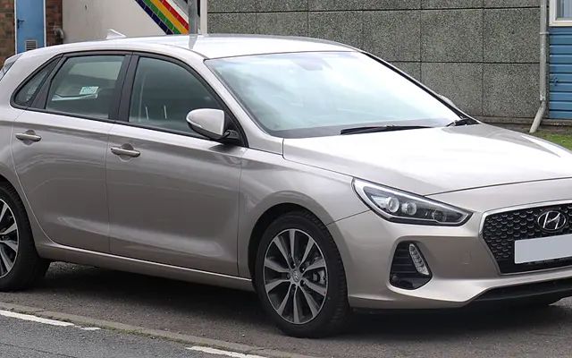

Par Motor › Precios por modelo › Hyundai i30 e i30 N
Precio de segunda mano · noviembre de 2026¿Cuánto vale un Hyundai i30 e i30 N de segunda mano?

Precio justo estimado de un Hyundai i30 e i30 N usado en España, año por año, con los kilómetros normales para su edad y en buen estado: de 4.300 € a 30.500 €. Para tasar el tuyo con sus kilómetros reales y su estado, usa el tasador gratis.
Precios del Hyundai i30 e i30 N por año
i30 I (2007–2012)
Precio de nuevo: 1.4 109 CV, 15.000 € · 1.6 CRDi 115 CV, 18.000 € · 1.6 122 CV, 16.500 €
| Año | Km normales | 1.4 109 CV · Gasolina | 1.6 CRDi 115 CV · Diésel | 1.6 122 CV · Gasolina |
|---|---|---|---|---|
| 2012 | 100.000 km | 6.200 € | 7.200 € | 6.800 € |
| 2011 | 100.000 km | 5.700 € | 6.700 € | 6.300 € |
| 2010 | 100.000 km | 5.400 € | 6.200 € | 5.900 € |
| 2009 | 100.000 km | 5.000 € | 5.800 € | 5.500 € |
| 2008 | 100.000 km | 4.700 € | 5.400 € | 5.100 € |
| 2007 | 100.000 km | 4.300 € | 5.100 € | 4.800 € |
i30 II (2012–2017)
Precio de nuevo: 1.4 100 CV, 16.000 € · 1.6 CRDi 110 CV, 19.500 € · 1.6 GDi 135 CV, 18.500 €
| Año | Km normales | 1.4 100 CV · Gasolina | 1.6 CRDi 110 CV · Diésel | 1.6 GDi 135 CV · Gasolina |
|---|---|---|---|---|
| 2017 | 100.000 km | 8.100 € | 10.900 € | 9.400 € |
| 2016 | 100.000 km | 7.900 € | 10.200 € | 9.100 € |
| 2015 | 100.000 km | 7.700 € | 9.600 € | 8.900 € |
| 2014 | 100.000 km | 7.500 € | 8.900 € | 8.600 € |
| 2013 | 100.000 km | 7.000 € | 8.300 € | 8.100 € |
| 2012 | 100.000 km | 6.600 € | 7.800 € | 7.600 € |
i30 III (2017–hoy)
Precio de nuevo: 1.0 T-GDi 120 CV, 20.000 € · 1.6 CRDi 136 CV, 23.000 € · 1.4 T-GDi 140 CV, 22.000 €
| Año | Km normales | 1.0 T-GDi 120 CV · Gasolina | 1.6 CRDi 136 CV · Diésel | 1.4 T-GDi 140 CV · Gasolina |
|---|---|---|---|---|
| 2026 | 5.000 km | 20.600 € | 22.800 € | 22.700 € |
| 2025 | 20.000 km | 17.700 € | 19.500 € | 19.400 € |
| 2024 | 35.000 km | 16.500 € | 18.200 € | 18.100 € |
| 2023 | 50.000 km | 15.400 € | 17.000 € | 16.900 € |
| 2022 | 65.000 km | 14.300 € | 14.600 € | 15.800 € |
| 2021 | 80.000 km | 12.800 € | 13.400 € | 14.100 € |
| 2020 | 95.000 km | 11.200 € | 13.400 € | 12.300 € |
| 2019 | 100.000 km | 10.600 € | 13.200 € | 11.600 € |
| 2018 | 100.000 km | 10.400 € | 13.100 € | 11.400 € |
| 2017 | 100.000 km | 10.100 € | 12.900 € | 11.100 € |
i30 N (2017–2023)
Precio de nuevo: N 2.0 T-GDi 250 CV, 30.000 € · N Performance 2.0 T-GDi 275 CV, 33.000 € · N Performance 2.0 T-GDi (restyling) 280 CV, 38.000 €
| Año | Km normales | N 2.0 T-GDi 250 CV · Gasolina | N Performance 2.0 T-GDi 275 CV · Gasolina | N Performance 2.0 T-GDi (restyling) 280 CV · Gasolina |
|---|---|---|---|---|
| 2023 | 50.000 km | 24.100 € | 26.500 € | 30.500 € |
| 2022 | 65.000 km | 22.700 € | 25.000 € | 28.800 € |
| 2021 | 80.000 km | 20.500 € | 22.600 € | 26.000 € |
| 2020 | 95.000 km | 18.100 € | 19.900 € | 22.900 € |
| 2019 | 100.000 km | 17.200 € | 19.000 € | 21.800 € |
| 2018 | 100.000 km | 17.000 € | 18.700 € | 21.600 € |
| 2017 | 100.000 km | 16.800 € | 18.500 € | 21.300 € |
Kilómetros normales: 15.000 al año en gasolina, híbridos y eléctricos, y 20.000 en diésel, con un máximo de 100.000 km (por encima no tasamos: el precio depende demasiado del historial de cada coche). Cifras redondeadas a 100 €.
Preguntas frecuentes
¿Cuánto vale un Hyundai i30 e i30 N de segunda mano?
Según el año, la versión y los kilómetros, un Hyundai i30 e i30 N usado vale hoy de 4.300 € a 30.500 € en España. El más barato de nuestra tabla es un 1.4 de 2007 (4.300 €) y el más caro un N Performance 2.0 T-GDi (restyling) de 2023 (30.500 €). Son precios justos estimados entre particulares y profesionales, con los kilómetros normales para su edad y en buen estado.
¿Cuánto valor pierde un Hyundai i30 e i30 N al año?
Con unos años encima, un Hyundai i30 e i30 N pierde alrededor de un 9 % de su valor cada año (calculado sobre el N 2.0 T-GDi de la generación i30 N). Los primeros años la caída es mayor y a partir de los 70.000 km se acelera.
¿Qué motorizaciones tiene el Hyundai i30 e i30 N?
En nuestra base de datos hay versiones gasolina y diésel, en 4 generaciónes: i30 I, i30 II, i30 III y i30 N.
¿Cómo sé si me piden demasiado por un Hyundai i30 e i30 N?
Abre el tasador de Par Motor, elige el Hyundai i30 e i30 N, el año y los kilómetros reales, y escribe lo que te piden. Te diremos si está por debajo del precio justo (chollo) o por encima (caro). Es gratis y no pide registro ni matrícula.
Otros Hyundai
Compara su coste real
El precio de compra es solo una parte. Mira cuánto te costaría al mes con combustible, seguro, neumáticos, mantenimiento y lo que pierde de valor.
Abrir el comparador →